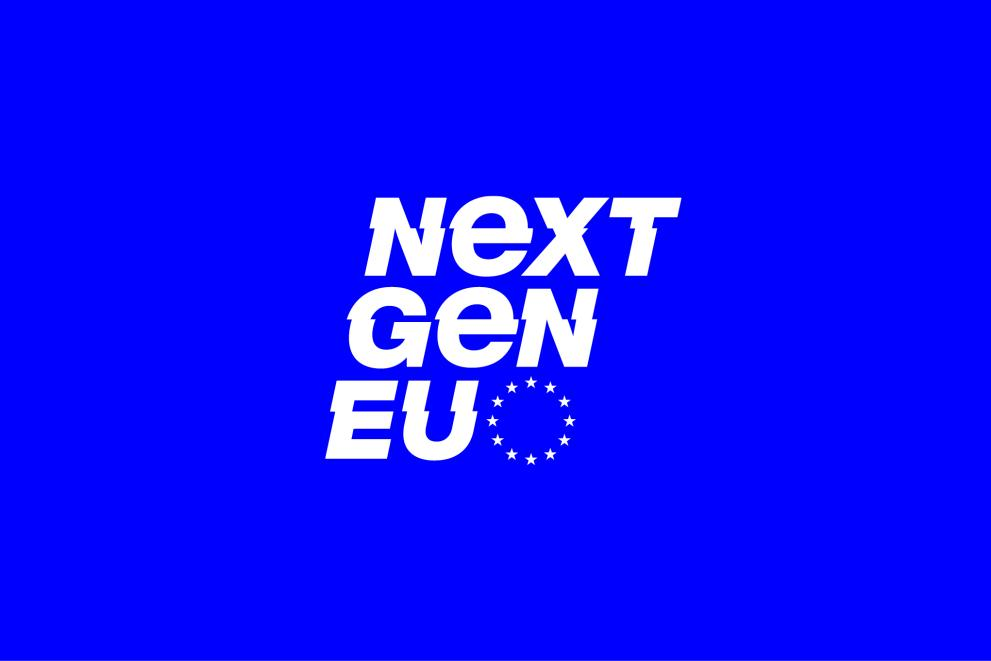

La Agenda 2030 y la UE
La Agenda 2030 establece 17 Objetivos de Desarrollo Sostenible (ODS) para abordar desafíos globales como la pobreza, el cambio climático y la igualdad. La Unión Europea (UE) ha integrado estos objetivos en sus políticas y programas para promover un desarrollo sostenible tanto en Europa como en el mundo.
1. La Unión Europea y los ODS
La UE aborda los ODS con políticas clave en áreas como:
- ODS 1: Fin de la pobreza: Fondo Social Europeo Plus (FSE+) para apoyar a las personas vulnerables.
- ODS 7: Energías renovables: Inversiones en proyectos limpios con Horizon Europe.
- ODS 5: Igualdad de género: Estrategias para reducir la brecha salarial y empoderar a las mujeres.
Ejemplos: Apoyo a la educación con Erasmus+, proyectos de transición energética y planes sociales para mejorar condiciones laborales.

2. El Pacto Verde Europeo
El Pacto Verde Europeo es la estrategia de la UE para lograr la neutralidad climática en 2050, con medidas como:
- Economía circular: Promoción del reciclaje y reutilización de materiales.
- Transición energética: Reducción de emisiones y fomento de energías limpias con REPowerEU.
3. Financiación de la sostenibilidad
Para apoyar la transición ecológica, la UE ofrece recursos como:
- Next Generation EU: Fondo de 750.000 millones de euros para la reconstrucción sostenible tras la pandemia.
- Fondos de Recuperación: Apoyan proyectos verdes y de economía circular.
Las empresas pueden acceder a estos fondos mediante convocatorias específicas para iniciativas sostenibles, fomentando empleo y competitividad.
